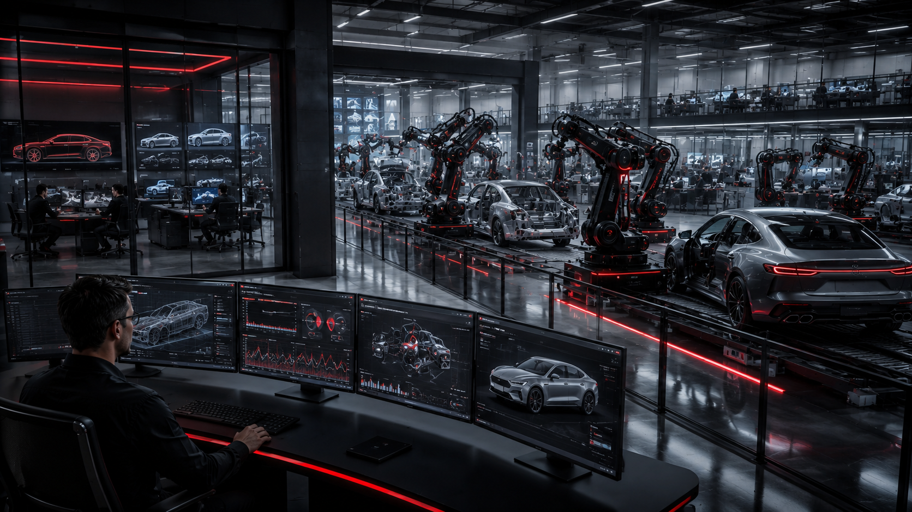

Our areas of expertise

From warehouse orchestration to factory floor validation, we ensure every workflow performs exactly as designed before it reaches production. Our QA and automation expertise helps organizations validate end-to-end logistics operations, manufacturing execution systems, and supply chain integrations with precision and speed. By combining intelligent test automation, process simulation, and real-world scenario validation, we uncover failures before they disrupt operations. We focus on reliability, scalability, and operational continuity across every touchpoint — from inbound inventory to outbound delivery. Whether validating ERP integrations, automated production lines, or complex distribution networks, our approach reduces downtime, accelerates deployment confidence, and improves overall system resilience. We do not simply test software; we validate operational performance under real business conditions. Every solution is engineered to help manufacturers and logistics providers achieve faster releases, predictable quality, and measurable operational excellence while maintaining the highest standards of system reliability and customer satisfaction.
We use advanced digital twin and scenario-based validation to simulate real operational conditions before systems are deployed into live environments. Our simulation-driven QA approach enables businesses to validate complex workflows, automation logic, and system behaviors with accuracy and confidence. By replicating real-world conditions, edge cases, and high-load scenarios, we identify hidden risks long before they become production issues. This allows organizations to optimize performance, improve reliability, and reduce costly downtime. Our expertise spans industrial systems, connected platforms, intelligent automation, and integrated enterprise environments where precision and predictability are critical. Through automated validation pipelines and continuous testing strategies, we transform simulation environments into powerful quality assurance ecosystems. Every scenario is designed to ensure systems behave consistently, securely, and efficiently under pressure. The result is faster innovation, safer deployments, and greater operational confidence. We help businesses move from reactive problem-solving to proactive quality engineering powered by intelligent simulation and validation expertise.
Modern robotic systems demand absolute reliability, precision, and performance. Our QA and validation expertise ensures robotic platforms operate safely and consistently across real-world conditions. We specialize in automated testing frameworks, system validation, performance evaluation, and reliability engineering for robotic ecosystems where hardware, software, and intelligent automation converge. From autonomous workflows to industrial robotics integration, we validate system interactions, communication layers, and operational stability at every stage of development. Our testing methodologies are designed to uncover vulnerabilities, performance bottlenecks, and synchronization issues before deployment. By combining simulation-driven verification with advanced automation strategies, we help organizations accelerate innovation without compromising quality or safety. Every robotic environment is tested against demanding operational scenarios to ensure predictable performance and long-term reliability. We focus on creating resilient systems capable of performing under pressure, adapting to changing conditions, and delivering consistent operational value. Our mission is to ensure robotics systems perform flawlessly before customers ever experience them.

Automotive systems require uncompromising quality, reliability, and safety across every connected experience. We deliver specialized QA, validation, and test automation solutions for modern automotive technologies including ADAS, infotainment, connectivity platforms, and intelligent vehicle ecosystems. Our approach focuses on validating performance under real-world driving scenarios, ensuring systems behave accurately, consistently, and securely across diverse operating conditions. Through automated testing, simulation environments, and scenario-based verification, we identify defects early and reduce development risk throughout the product lifecycle. We help automotive innovators accelerate deployment while maintaining the highest standards of compliance, stability, and user experience. From sensor validation to infotainment responsiveness and system integration testing, every solution is engineered for precision and reliability. Our expertise enables manufacturers and technology providers to release with confidence, improve product quality, and minimize costly failures in production environments. We ensure automotive systems are thoroughly tested, validated, and prepared for the complexity of next-generation mobility